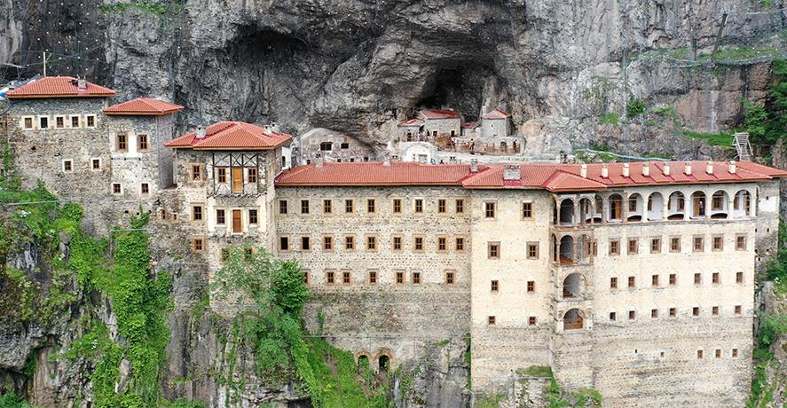
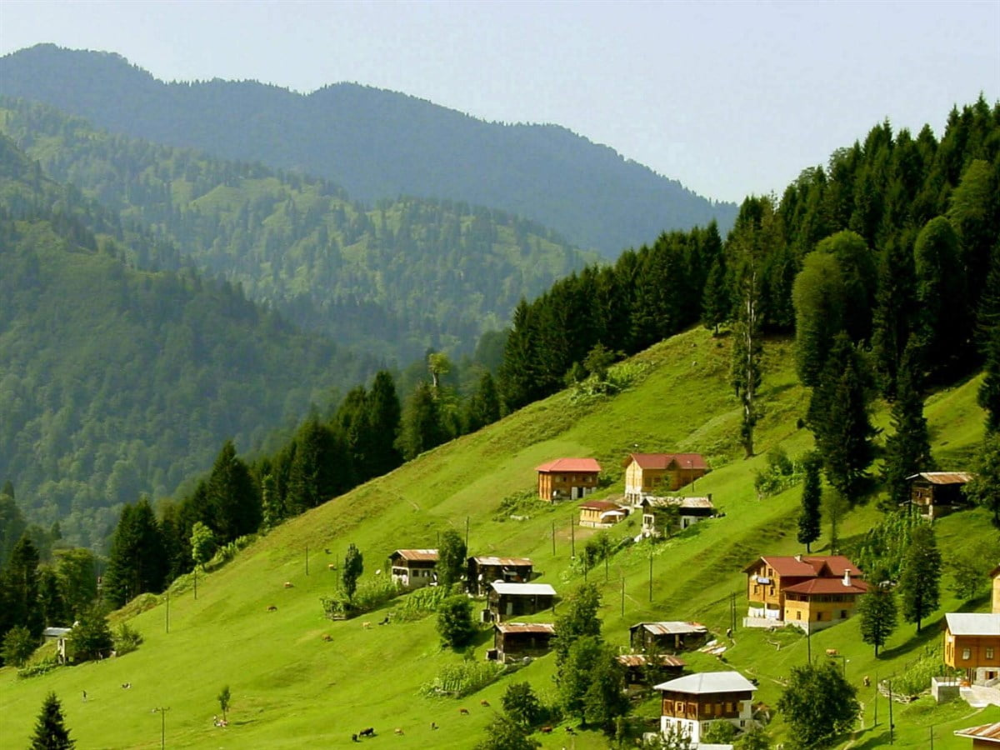
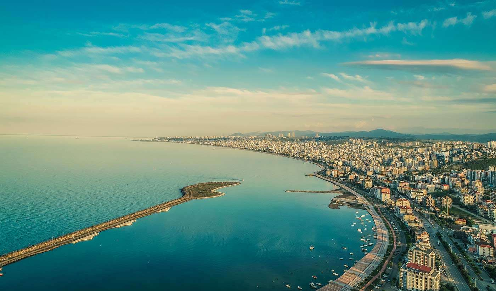
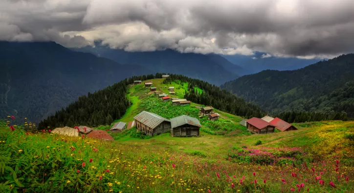
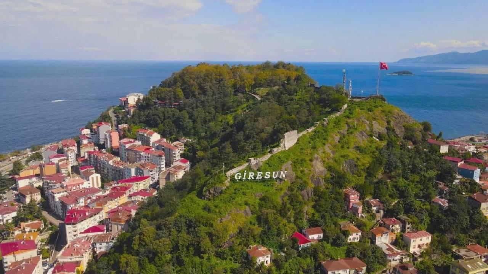
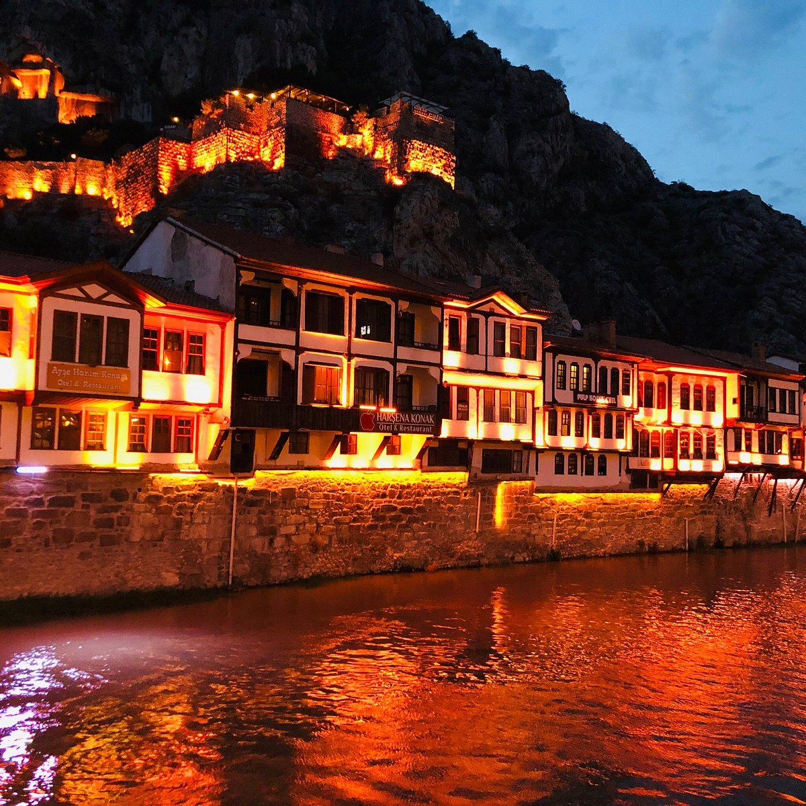
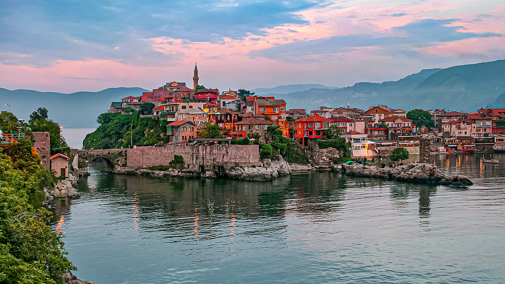
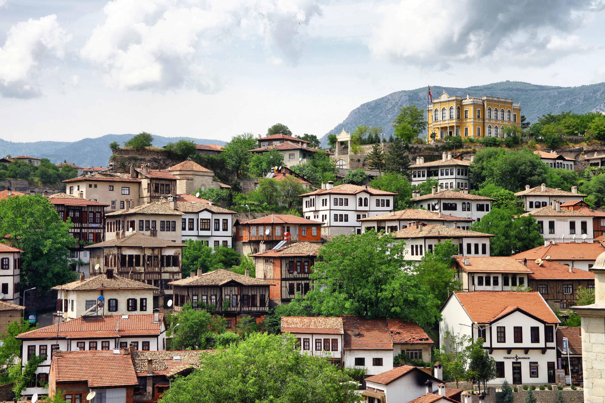
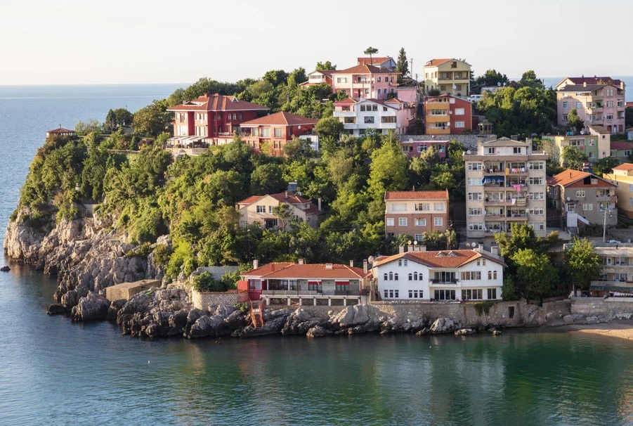

Sümela Manastırı, yaylaları ve Karadeniz kültürü ile tanınır.

Çay bahçeleri, Fırtına Vadisi ve yaylalarıyla doğanın kalbinde.

Atatürk'ün Samsun'a çıkışıyla tarih sahnesinde yer alan modern bir sahil şehri.

Boztepe manzarası, fındığı ve teleferiğiyle Karadeniz’in gözdesi.

Giresun Adası ve kalesi ile doğa ve tarihi birleştiren bir şehir.

Osmanlı şehzadelerinin şehri, tarihi evleri ve nehir kıyısı manzarasıyla büyüler.

Amasra beldesiyle ünlü, doğal plajları ve tarih kokan sokakları ile ziyaretçilerini büyüler.

Safranbolu evleri ve UNESCO mirası sokaklarıyla kültürel zenginlik sunar.

Kömür madenciliğiyle bilinen şehir, sahil şeridi ve mağaralarıyla dikkat çeker.